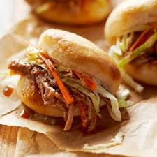

Pulled Pork

pulled pork Recipes
wether youre making it in the slow cooker . oven, or smoker,we"ve got dozens of top rated recipes for pulled pork
ingredients
- brown sugar
- Onion powder
- Garlic powder
- Cumin
- Smoked paprika
- Good amount of salt pepper
- Pinch of cayenne
Steps needed for making the dish
- cleaning up the pork Butt
- Rub-a-deub-dub and chilling overnight
- How to cook pulled pork
- the waitng cooking
- Resting your pork
- puling it
- storing + Reheating
- people made this project